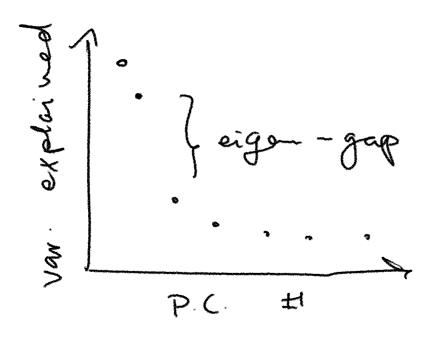

Back in 22 there was a bit of a flareup on twitter over a paper with the very spicy title
Principal Component Analyses (PCA)-based findings in population genetic studies are highly biased and must be reevaluated
According to the abstract, there are tens (or even hundreds) of thousands of papers affected by this high bias, and
PCA results may not be reliable, robust, or replicable as the field assumes.
I would love to live in a world where you could get funding to re-evaluated a hundred thousand articles. Maybe if you say that you’ll do it by AI?
I skimmed the paper then and honestly I don’t care to re-read it. I’m just providing some context for this theorem I know of.
It is certainly true that if you take two random samples from the same population and do a PCA on both of them, you’re not likely to get two exactly identical sets of principal component vectors. Or if you take a single sample from a population you’re not likely to get the exact true population principal components back. However there is a theorem that if the “eigengap” (described below) is large enough, the top principal components are likely to span the right space.

PCA is an eigenvalue decomposition of a symmetric matrix (the covariance matrix of your data). Suppose for simplicity we’re working in two dimensions and let our covariance matrix \(A\) be a symmetric matrix with the eigenvalues \(\lambda_1 > \lambda_2\). In PCA terms these correspond to the “variance explained” values of your scree plot. The eigengap between these two eigenvalues is \(\delta = \lambda_1 - \lambda_2\). Now let \(u_1, u_2\) be the corresponding eigenvectors to \(\lambda_1\) and \(\lambda_2\). These are the true population principal components.
We do a random sample and get \(A + E\), a perturbation of \(A\) (still symmetric), meaning it’s \(A\) plus some noise. We don’t know how much noise is in there. Suppose \(v_1\) and \(v_2\) are the eigenvectors of \(A+E\): how reliable/robust/replicable is an inference based on \(v_1\) in place of \(u_1\)?
The DK theorem informs us that if \(\theta\) is the angle between \(u_1\) and \(v_1\) we have
\[ \sin \theta \leq \frac{\sqrt{2} \lVert E \rVert_F}{\delta}, \]
with \(\lVert \cdot \rVert_F\) the Frobenius norm.
In other words, the angle between our observed vector \(v_1\) and the hidden true vector \(u_1\) is smaller than the scale of the added noise divided by the size of the eigengap. Multiplied by an annoying constant. We get a vector close to (ie with small angle to) the truth if we have little noise or a large eigengap (or, God willing, both).
This extends to several dimensions where instead of looking at the angle between two vectors we look at the angle between subspaces. The space spanned by the top \(k\) principal components is robust if there is a large gap between the \(k\)-th and the \(k+1\)th eigenvalues.
I don’t believe that a hundred thousand articles are biased, in the technical sense, from use of PCA, but I 100% believe that many many articles have large noise and small eigengaps. But you can’t really blame PCA for noisy data.
Two nice blog posts on this sort of thing:
Original paper of D and K (did not read):
There is a paper called A useful variant of the Davis–Kahan theorem for statisticians, which has a promising title.
On measuring the angle between subspaces:
this file last touched 2024.05.28